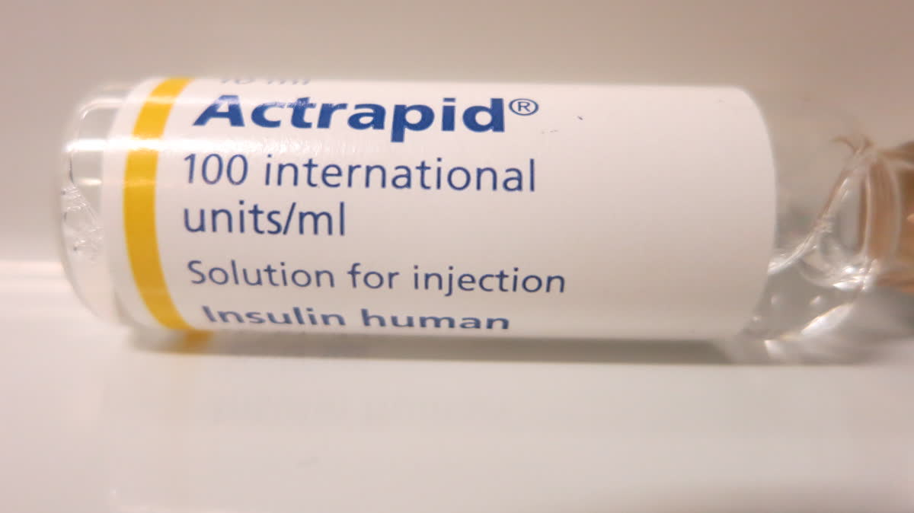
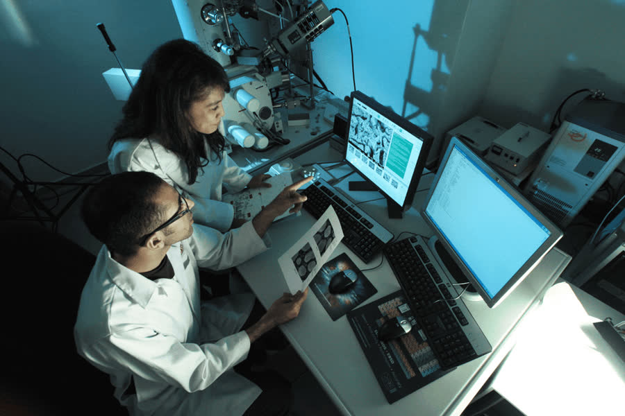
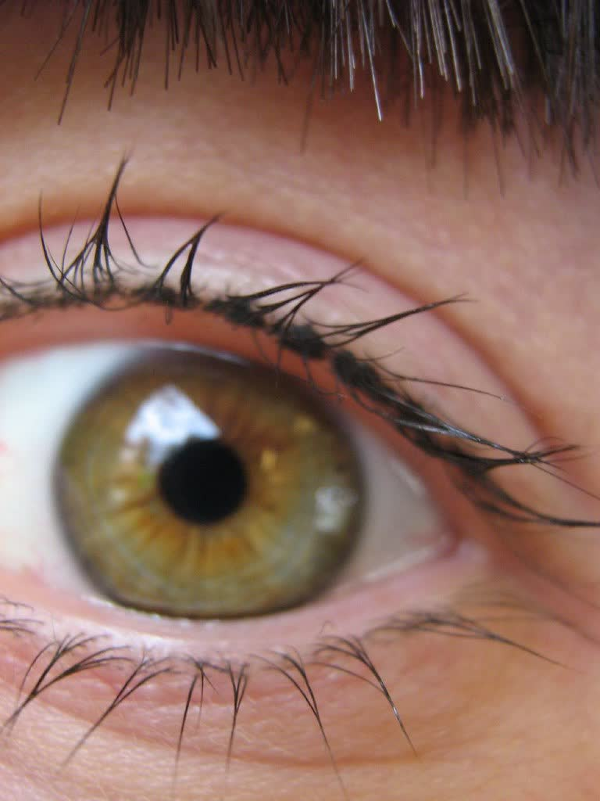
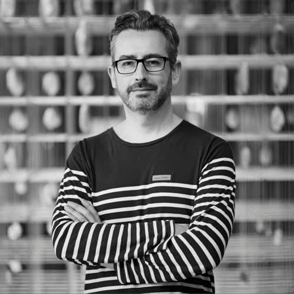
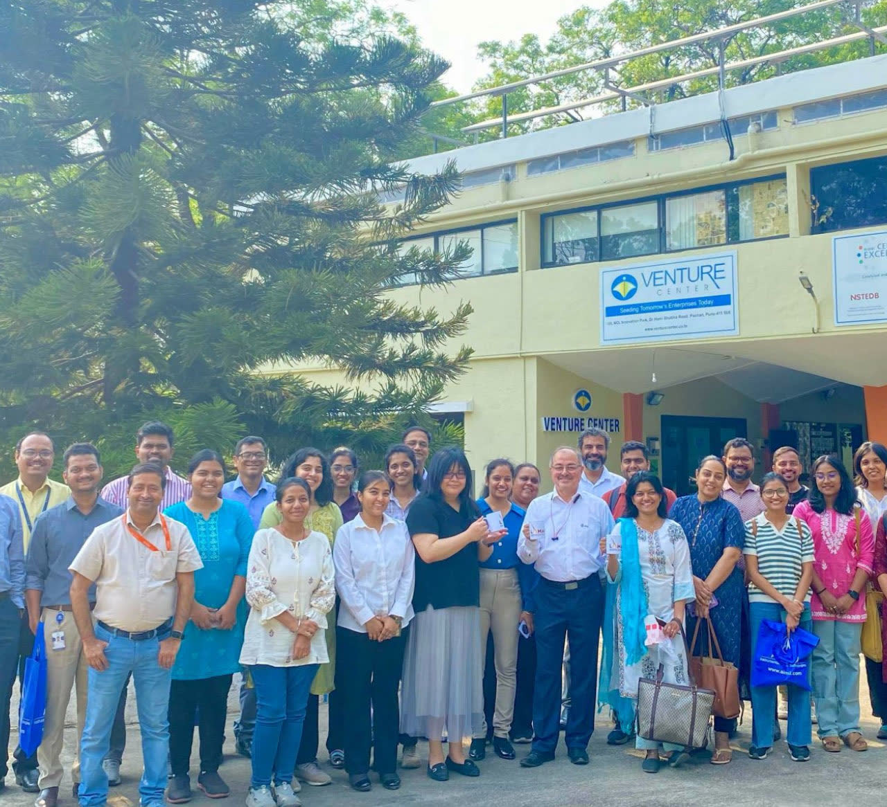

Diabetes
InStrong
800M+
people living with diabetes
- Thermostable insulin, stored at room temperature
- 5× higher stability; sustained at 50°C
- Built for places without cold storage or steady power
Thermostable biologics · India and France
In much of India and Africa, the cold chain breaks long before insulin reaches the patient. Lamark's patented ProteoStrong technology keeps biologics stable at room temperature, so the medicine survives the journey.
Drag to the temperature where you live
A Delhi afternoon in April
Labelled for storage at 2–8°C until use. Needs a working fridge at every step.
Outside storage rangeLamark's thermostable insulin. Stability sustained over time at 50°C.
Within tested rangeInStrong is in development and not yet approved for patient use.
The journey of one vial
Every stop between the factory and the patient needs refrigeration and uninterrupted power. Tap each stop to see where it breaks.

The vial leaves at 2–8°C. Every stop after this one has to keep it there.
A thermostable formulation can be stored and shipped at room temperature, even in hotter climates.
Figures as cited on lamarkbiotech.com/diabetes.
ProteoStrong technology
A biologic can take a decade to discover and still fail on the road. Formulation is the step that protects it from heat, light, movement and time. ProteoStrong is Lamark's patented formulation platform: one technology, applied to many life-saving proteins.

Pipeline
Every candidate is built on ProteoStrong. Filter by disease to see where each one stands.
| Candidate |
R&D
PoC
Working TPP
IND-enabling
Clinical Ph 1/2
|
|---|---|
INS-RTA InStrong · Diabetes |
Working target product profile |
INS-R2T InStrong · Diabetes |
Working target product profile |
RD-LB EyeStrong · Wet AMD |
Proof of concept |
RD-LC EyeStrong · Wet AMD |
Proof of concept |
KRK-TTA OncoStrong · Lung cancer |
Research |
PEM-ST OncoStrong · Lung cancer |
Research |
Positions are read from the pipeline chart on the current site. Lamark's team would confirm each stage before this goes live.
Programmes

Diabetes
800M+
people living with diabetes

Wet AMD
6–12
eye injections a year for today's patients

Lung cancer
18.7%
of all cancer deaths are lung cancer

Team
To care for medicines, so they can care for us.


Milestones

Pune and Paris
Come and see the work, in Pune or in Paris.
Work with Lamark
Lamark is a B2B company. Pick the one that fits and we'll route it to the right person.
We partner with pharmaceutical companies for API manufacturing, clinical trials and market expansion. Our technology is already applied to insulin and four other proteins.